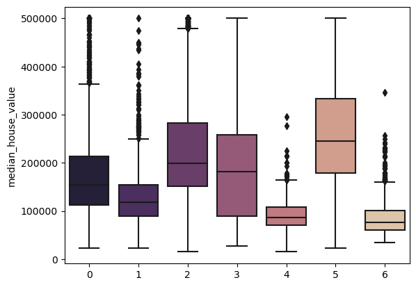

Figure 1: Distribution of Attributes Countplot
Project 4: Clustering
What is Clustering?
Clustering is a fundamental technique in unsupervised learning, where the goal is to identify groups, or clusters, of similar data points within a dataset. The main idea is to partition the data into subsets, or clusters, such that data points within the same cluster are more similar to each other than to those in other clusters. Two common methods for clustering are k-means and agglomerative hierarchical clustering.
- K-Means Clustering: K-means starts by randomly selecting k initial cluster centroids
(representative points) in the feature space. Then, it iteratively assigns each data
point to the nearest centroid and updates the centroids by computing the mean of all
points assigned to each centroid. This process is repeated until the centroids no longer
change significantly, or until a specified number of iterations is reached.
- Agglomerative Hierarchical Clustering: Agglomerative clustering starts by considering
each data point as a separate cluster and then merges the closest pairs of clusters
iteratively until only one cluster remains. The merging process is guided by a distance
metric (e.g., Euclidean distance) between clusters, and various linkage criteria (e.g.,
single linkage, complete linkage, average linkage) determine how the distance between
clusters is measured.
Introduction
Navigating the current housing market presents significant challenges, with elevated mortgage rates, out-of-reach home prices and record-low housing stock. Achieving homeownership feels increasingly out of reach for many today. According to the Zillow Home Value Index, the average value for single-family homes in the US peaks in California at $785,294. In this analysis, we'll delve into California's housing rates from a few decades ago. Our goal is to explore the relationship between various features in our dataset and housing values.
We will be using the "California
Housing Prices" dataset from
Kaggle. The data pertains to the houses found in a given California district and some summary
statistics about them based on the 1990 census data. The dataset features 10 variables for
20,640 entries, most which are self explanatory: longitude, latitude, housing_median_age,
total_rooms, total_bedrooms, population, households, median_income, median_house_value,
ocean_proximity. Nine of the variables are ordinal, with ocean_proximity being the nominal
variable. We will use the location data (latitude and longitude). We will cluster the houses by
location and observe how house prices fluctuate across California.
- longitude: A value representing how far west a house is. Higher values represent houses
that are further west.
- latitude: A value representing how far north a house is. Higher values represent houses
that are further north.
- median_house_value: The median house price within a block measured in USD.
Pre-processing
Our dataset has not been cleaned so we will need to go through some pre-processing steps. We'll start off with the entire dataset, removing any null values and duplicates. I created histograms and bar plots to visualize the distribution of each variable and check for outliers. I found that ocean_proximity has only 5 entries for its ISLAND class. These outliers will skew our model so we have to drop them from our dataset. Even if we're not using ocean_proximity in our model, it will act as a confounding factor in our clustering. Now that our dataset has been cleaned, we will drop all variables except the ones we're using.
Data Understanding & Visualization
Using seaborn's countplot, we can plot the distribution of the attributes we're using.
We can see that the longitude and latitude variables are unbalanced. This tells us that some locations in California have a denser population than others. Our median house value variable is right skewed but with a heavy distribution of houses valued at 500,000. Now let's see how these attributes look like together.
Figure 2: Distribution of Median House Value across California
The scatterplot allows us to visualize the distribution of median house values across California. The deeper shades of purple indicate areas with higher-priced houses, predominantly clustered along the coastline. It is widely known that properties with beach access tend to be more expensive.
Modeling
We'll be implementing the k-means algorithm to perform our geo-spatial clustering, due to its simplicity, efficiency, and scalability. K-Means clustering is a distance-based algorithm so we'll need to scale the data. If we do not scale the data, variables with larger scales will be have more weight in the distance formula that is being optimized during training. Now we can fit our K-means model with the scaled training data.
Because we're not sure how many clusters to use, we'll have to test out a range of clusters and choose the best fit. For this, we'll use the elbow method. This method plots the explained variation in the data as a function of the number of clusters, allowing us to determine the optimal number of clusters.

Figure 3: Elbow Plot
WCSS represents the sum of squared distances between each data point and its assigned cluster centroid. Our Elbow plot tells us that the majority of the variation can be explained using 2 clusters. Let's test this out by visualizing the data using a scatterplot.
Figure 4: K=2 Scatterplot
The data is split into two fairly equal groups: Northern California (0) and Southern California (1). Let's take a look at the median house values of these two groups.
Figure 5: Median House Value for k=2 Clusters
Both groups show to have similar distributions of median house value. Maybe we didn't use the correct cluster size. Sometimes the elbow method doesn't accurately represent the data. Let's try using the Silhouette Coefficient. This score measures how similar an object is to its own cluster (cohesion) compared to other clusters (separation). The score ranges from -1 to 1, where a high value indicates that the object is well matched to its own cluster and poorly matched to neighboring clusters. A score close to 0 indicates overlapping clusters. In summary, the silhouette_score function computes a metric to assess the quality of the clustering algorithm's output based on the distances between points in the input data and their assigned clusters.
Figure 6: Silhouette Coefficient for Clusters
Once again, the highest score shows to be at 2 clusters. Seeing that our data driven estimates are not identifying insightful patterns, we'll have to rely on our knowledge of the data. Let's manually test out a range of clusters.
Figure 7: K=7 Scatterplot
Our scatterplot looks much better with 7 clusters. We can compare this to our earlier scatterplot with a hue of median_house_value and see that our clusters represent the median house value of each location more accurately.
Figure 8: Distribution of Median House Value across California
We can further plot the distribution of median_house value for each of these clusters using boxplots.

Figure 9: Median House Value for k=7 Clusters
We can see that clusters 4 and 6 have the lowest median house values. In the cluster scatterplot, these clusters are the very top cluster (4) and the darkest cluster in the center (6). Clusters 0, 2 and 3, starting at the very bottom of California and going up, are all close in range for median value with cluster 2 in the lead. Cluster 1 is second lowest for median value and is seen in the scatterplot as the lightest cluster in Northern California. To the left of that cluster is cluster 5, with the highest median house value. The best explanation for this is that this location is near the Bay area as we can see in this scatterplot:
Figure 10: Ocean Proximity Distribution